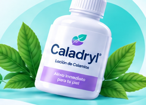
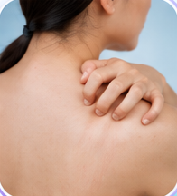
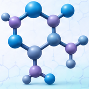
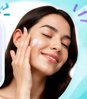

Conoce en detalle este medicamento, su composición química y su impacto en la salud.
Descubrir más →
Detrás de este proyecto, un gran equipo de estudiantes
Caladryl es una loción de calamina, reconocida por sus propiedades calmantes, protectoras y antisépticas, ideal para el alivio de irritaciones en la piel.

Caladryl contiene Calamina, un compuesto con propiedades astringentes y protectoras para la piel.

Estudios y análisis respaldan la eficacia de la calamina en el alivio de irritaciones cutáneas y su acción protectora.
Caladryl es un aliado confiable para el cuidado de tu piel, gracias a su fórmula con calamina, sus beneficios comprobados y su eficacia en el alivio de irritaciones.

Descubre todo sobre Caladryl en un solo lugar